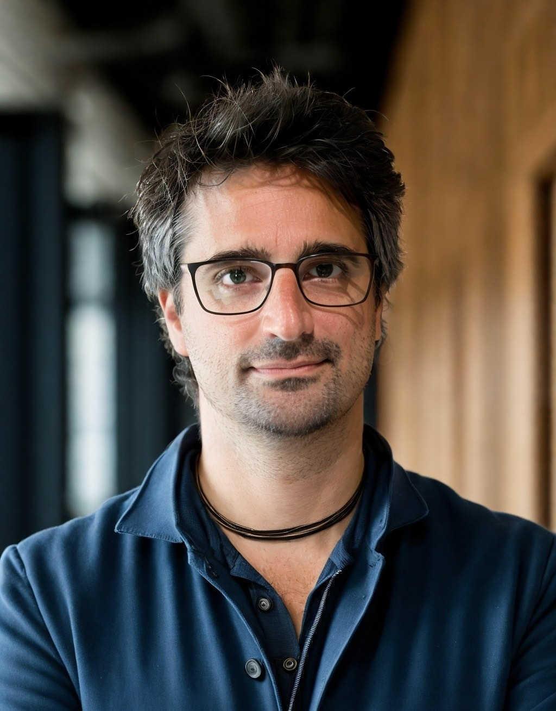
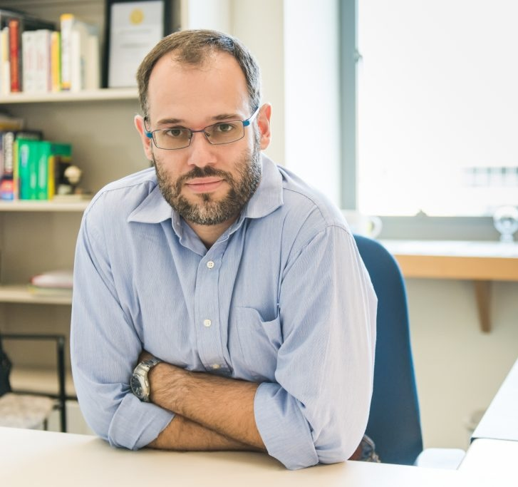
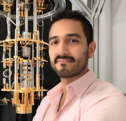

Sponsors
We gratefully acknowledge UMBC for hosting the workshop, the DOE Office of Science for providing the primary funding, and the UMBC Quantum Science Institute for supporting invited speaker travel and accommodation.
From Quantum Chemistry to NISQ Devices
The Natural and Engineered Complex Quantum Systems workshop brings together researchers from quantum information science, quantum chemistry, and quantum thermodynamics to explore the interplay between energetics and information processing in complex molecular systems.
Topics range from thermodynamic stability of molecular qubits to quantum simulation of thermodynamic systems, with a strong emphasis on bridging theoretical quantum thermodynamics and experimental applications. The workshop is part of the UMBC Quantum Science initiative and is supported by the DOE Office of Science, Chemical Sciences, Geosciences, and Biosciences Division.
A key goal is to provide an inclusive platform for early-career researchers. DOE funding will support the attendance of postdoctoral researchers and graduate students, with prizes awarded for outstanding contributions.
| 8:00 – 8:45 AM | Registration |
| 8:45 – 9:00 AM | Opening Remarks — Todd Pittman, Director of the UMBC Quantum Science Institute |
| 9:00 – 10:00 AM | Keynote Speaker 1 |
| 10:00 – 10:15 AM | Coffee Break |
| 10:15 AM – 12:15 PM | Focused Session 1 |
| 12:15 – 1:30 PM | Lunch Break |
| 1:30 – 2:30 PM | Keynote Speaker 2 |
| 2:30 – 4:30 PM | Focused Session 2 |
| 4:30 – 6:30 PM | Poster Session |
| 9:00 – 10:00 AM | Keynote Speaker 3 |
| 10:00 – 10:15 AM | Coffee Break |
| 10:15 AM – 12:15 PM | Focused Session 3 |
| 12:15 – 1:30 PM | Lunch Break |
| 1:30 – 2:30 PM | Keynote Speaker 4 |
| 2:30 – 4:30 PM | Focused Session 4 |
| 4:30 – 5:00 PM | Coffee Break & Awards Committee Deliberation |
| 5:00 – 5:30 PM | Early-Career Awards · Summary & Closing Remarks |
We invite abstract submissions for contributed talks and poster presentations on all topics of interest. Early-career researchers (graduate students and postdocs) are especially encouraged to submit. Outstanding contributions will be recognized with awards during the closing ceremony.
| Abstract submission deadline | TBA |
| Notification of acceptance | TBA |
| Workshop dates | May 26 – 27, 2026 |
To submit a contribution, please use the registration form. Include the title, author(s), affiliation(s), and indicate your preference for an oral or poster presentation.
There is no registration fee — the workshop is supported by the DOE Office of Science. Please register using the form below.
Travel support is available for a limited number of early-career participants (postdoctoral researchers and graduate students from U.S. institutions). Details on how to apply for travel support will be posted here.
University of Maryland, Baltimore County
Physics Building, Room 101
1000 Hilltop Circle
Baltimore, MD 21250
USA
By air: Baltimore/Washington International Thurgood Marshall Airport (BWI) is approximately 15 minutes from campus.
By train: BWI Amtrak/MARC station connects to Baltimore Penn Station and Washington, D.C.



For questions about the workshop, please contact fanza@umbc.edu.
We gratefully acknowledge UMBC for hosting the workshop, the DOE Office of Science for providing the primary funding, and the UMBC Quantum Science Institute for supporting invited speaker travel and accommodation.